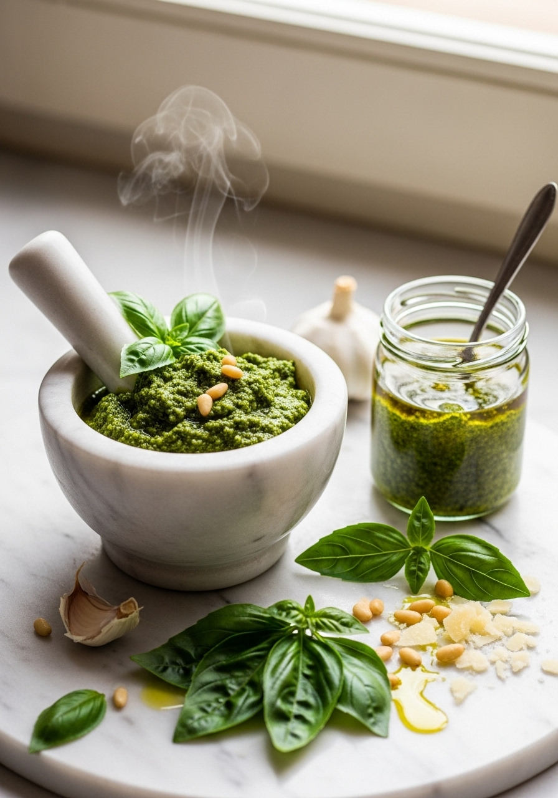
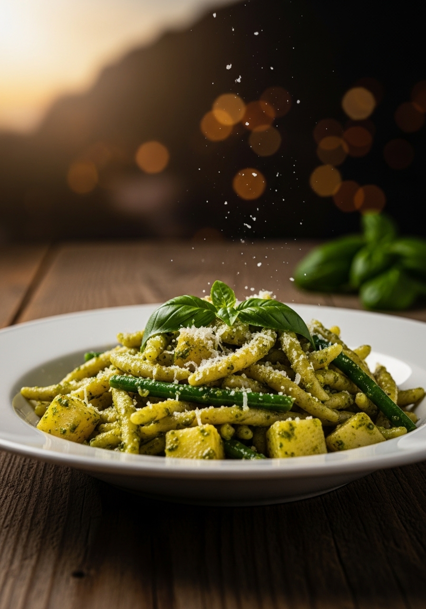

Il pesto alla genovese è il condimento italiano più imitato e più raramente preparato nel modo giusto. La ricetta originale, depositata dalla Confraternita del Pesto di Genova, richiede basilico Genovese DOP, pinoli tostati, aglio, Parmigiano Reggiano DOP, Pecorino sardo e olio extravergine ligure — lavorati rigorosamente nel mortaio di marmo con il pestello di legno. Il calore delle lame del frullatore ossida il basilico e trasforma il verde brillante in marrone opaco. Il mortaio è lento ma crea una consistenza cremosa e un profumo impossibili da replicare.

OriginaleIl pesto alla genovese ha radici antichissime nella Liguria medievale: le salse a base di erbe pestate nel mortaio erano comuni in tutta l'area mediterranea. Ma la versione moderna con basilico, pinoli, aglio e formaggio si codifica a Genova nell'Ottocento, quando il porto ligure era uno dei più attivi d'Europa e la cucina genovese si arricchiva degli scambi commerciali. Il termine 'pesto' deriva semplicemente dal verbo 'pestare' — e il mortaio rimane lo strumento identitario della preparazione autentica. Nel 2009 la Confraternita del Pesto di Genova ha depositato la ricetta ufficiale, specificando ogni ingrediente con la sua provenienza geografica precisa. Il Campionato Mondiale del Pesto al Mortaio si svolge ogni due anni a Genova, con concorrenti da tutto il mondo che si sfidano a chi produce il pesto più profumato e cremoso.
La scienza spiega perché il mortaio è superiore al frullatore per il pesto. Le lame metalliche del frullatore girano a velocità altissima generando calore e ossigeno — i due nemici del basilico. Il calore denatura le clorofille e gli enzimi ossidativi del basilico trasformando il colore da verde brillante a verde-marrone opaco in pochi secondi. Il mortaio, al contrario, rompe le cellule vegetali attraverso pressione meccanica lenta, liberando gli oli essenziali del basilico senza surriscaldarli. Il risultato è un pesto più verde, più profumato e con una consistenza granulosa e cremosa al tempo stesso che le lame del frullatore non riescono a creare. Se proprio devi usare il frullatore, usa la funzione a intermittenza, aggiungi cubetti di ghiaccio nel contenitore e lavora in 3-4 riprese di 5 secondi ciascuna.
Ingredienti
Procedimento

Il pesto alla genovese si usa tradizionalmente con le trofie (pasta ligure attorcigliata) o le trenette (tagliatelle liguri), sempre con patate lessate e fagiolini nella stessa acqua di cottura — la 'pasta al pesto con patate e fagiolini' è il piatto ligure per eccellenza. Importante: non scaldare mai il pesto in padella, aggiungi sempre a freddo alla pasta calda con un po' di acqua di cottura. Il calore distrugge il colore e il profumo. Per conservarlo: ricopri sempre con uno strato di olio extravergine in superficie prima di chiudere il barattolo — previene l'ossidazione. In frigorifero dura 3-4 giorni, nel congelatore 3 mesi (congela in vaschette per il ghiaccio per avere porzioni singole).
Sì, ma il risultato sarà diverso: il pesto diventerà più scuro (verde-marrone) e meno profumato a causa del calore generato dalle lame. Per minimizzare i danni: usa la funzione pulse, lavora in riprese brevi di 5 secondi, aggiungi qualche cubetto di ghiaccio al basilico e metti il contenitore del frullatore nel freezer 10 minuti prima. Il risultato sarà comunque molto buono, anche se non identico al mortaio.
Il basilico si è ossidato per il calore (frullatore troppo veloce o troppo a lungo) o per il contatto con l'aria. Per evitarlo: lavora il basilico freddo e asciutto, usa il mortaio o il frullatore a intermittenza, aggiungi subito l'olio che protegge il basilico dall'ossigeno, e conserva sempre con uno strato di olio in superficie.
Le noci sono il sostituto più usato — più economiche e facilmente reperibili. Mandorle pelate o anacardi danno una versione neutra e meno dolce. I pistacchi di Bronte creano un pesto al pistacchio delizioso ma diverso dall'originale. Il sapore cambia ma il risultato è sempre buono.
Le trofie liguri sono la scelta tradizionale — la loro forma attorcigliata cattura perfettamente il pesto. Le trenette (tagliatelle liguri più strette) sono l'alternativa classica. Gli spaghetti e i linguine funzionano bene. La pasta al pesto autentica ligure include anche patate a dadini e fagiolini cotti nella stessa acqua della pasta.
Il sale va aggiunto molto con parsimonia perché il Parmigiano, il Pecorino e i pinoli contengono già sale naturale. Assaggia sempre prima di salare. Il pizzico di sale grosso nel primo passaggio con l'aglio serve come abrasivo per facilitare la pestatura, non come condimento principale.